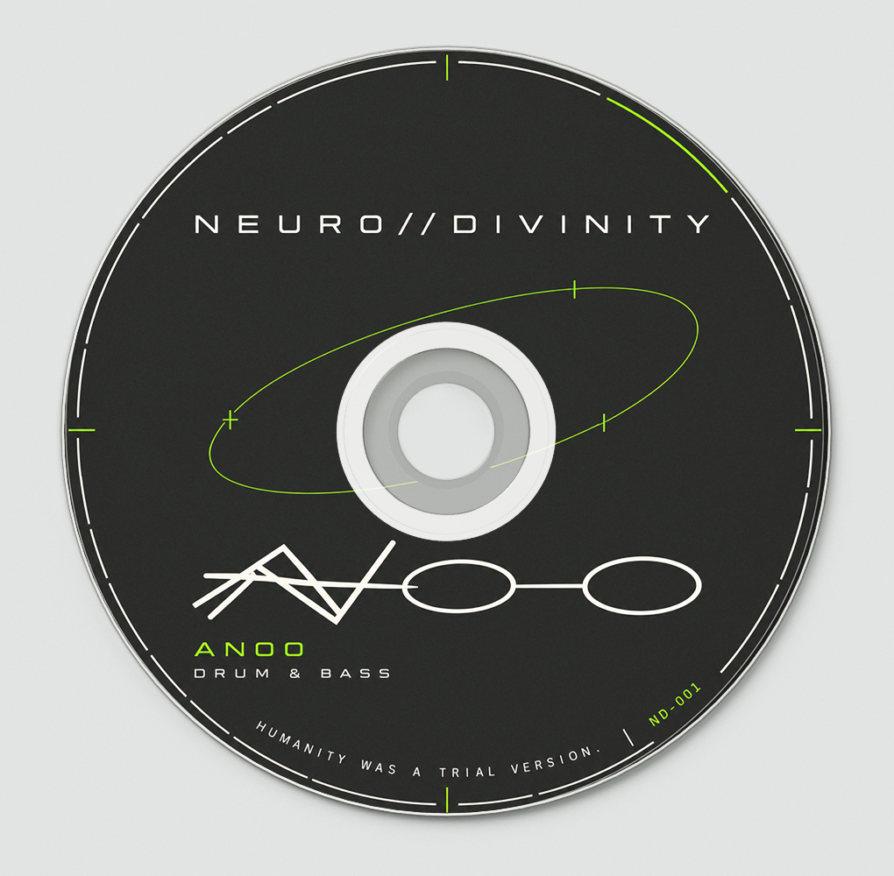
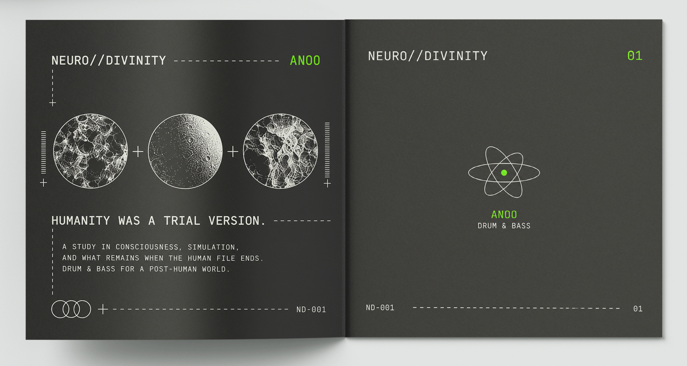
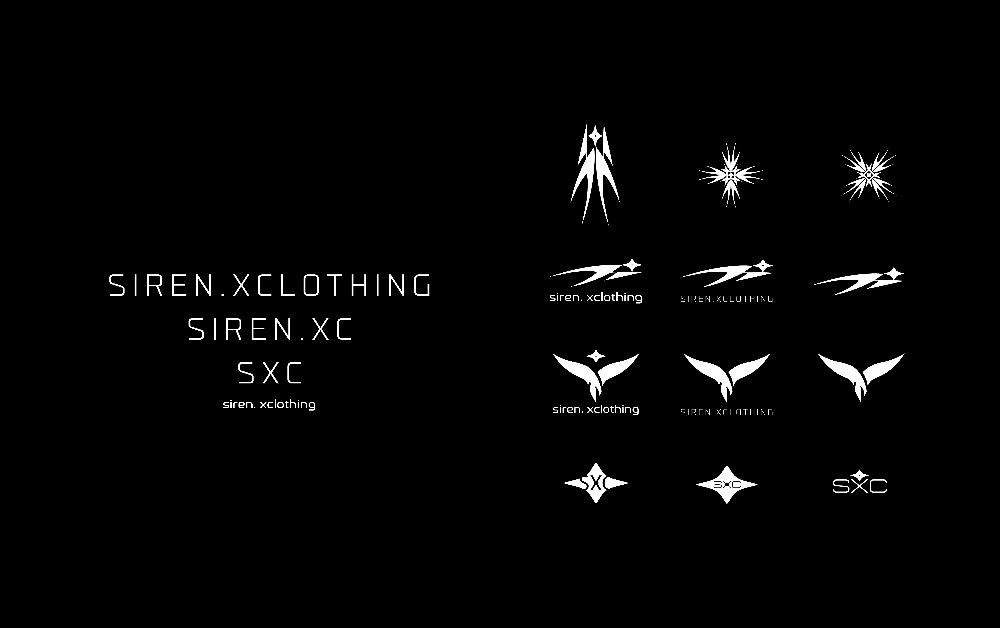
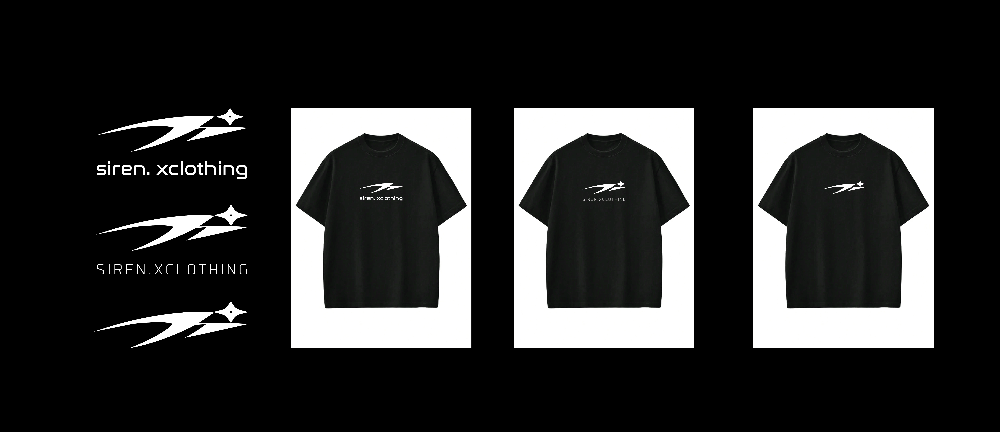
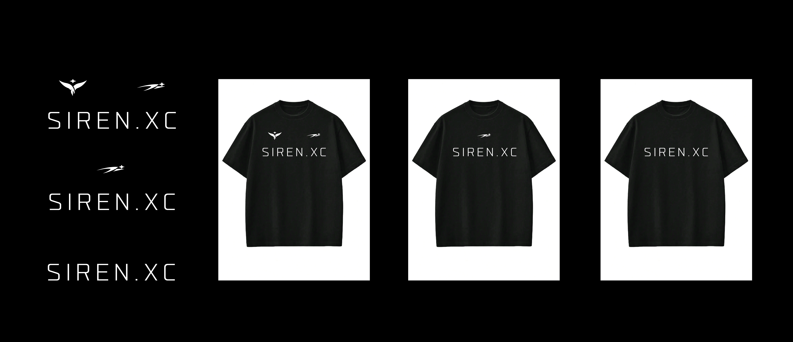
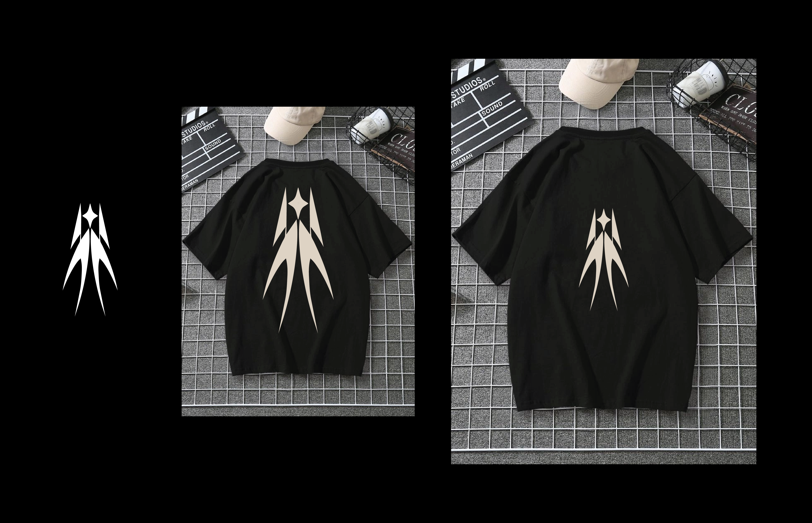
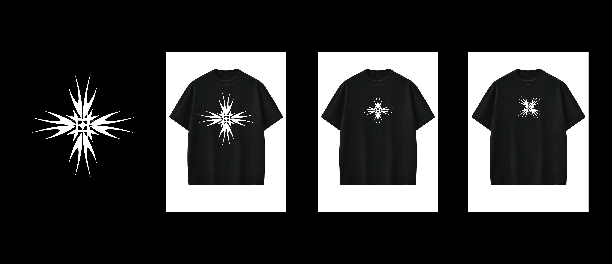
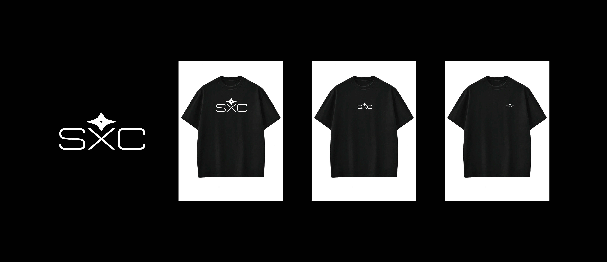

Alson Braho
Graphic Designer
Welcome to my portfolio. Explore a selection of my work below.
Selected work / 01
NEURO::DIVINITY
Swipe or use the arrows to explore. Select an image to see it in full.






1 / 5
“Humanity was a trial version.” Album artwork and packaging design for a personal drum and bass concept, bringing together the cover, disc and booklet details.
Selected work / 02
The Last Prophecy
“The future was written before the world began.”
A personal poster study combining medieval-inspired imagery, distressed textures and expressive typography. Four variations explore how color and lettering change the atmosphere of the same concept.
Imagery / Texture / Typography
Explore the variations. Select a poster to view it in full.


1 / 4
Selected work / 03
SIREN.X Clothing
Brand identity concepts developed for a client’s fashion brand. The series explores wordmarks, symbols and garment applications, alongside a monochrome illustration direction.
From identity explorations to clothing applications. Swipe or use the arrows; select an image to see it in full.













1 / 7
Get in touch
Let’s create something
together.
Have a project in mind? Tell me about it.
madebybraho@gmail.comEmail me about your project, a collaboration, or a creative idea.